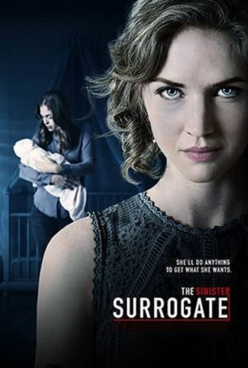

IMDB-Wertung: 4.8 / 10
IMDB-Wertung: 4.8 / 10  Metascore:
Metascore: 
Nachdem ein Paar die scheinbar perfekte Leihmutter für ihr Baby gefunden hat, stellt sich schon bald heraus, wozu die Leihmutter offenbar alles bereit ist, um das Baby in ihrem Körper behalten zu dürfen…
Alternativ: The Sinister Surrogate (Englischer Titel)
 IMDB-Wertung: 4.8 / 10 Metascore:
Nachdem ein Paar die scheinbar perfekte Leihmutter für ihr Baby gefunden hat, stellt sich schon bald heraus, wozu die Leihmutter offenbar alles bereit ist, um das Baby in ihrem Körper behalten zu dürfen…
Jahr: 2018
Dauer: 83 Minuten
FSK:
Land: USA Studio: Lifetime TelevisionTonspuren: DD5.1 - ,
Untertitel:
Auflösung: 1080p (1920x1080) Größe: 3522 MB
Genre: Thriller
Regisseur: Isak Borg, Dena Hysell-Cornejo
Drehbuch: Adam Rockoff
Soundtrack: Alexander Bornstein
Darsteller:
 Jim Meskimen als Dr. Key
Jim Meskimen als Dr. KeyDatei: X:\2018(G-M)\Mysteriöse Leihmutter, Die (2018, FSK, 1920x1080).mkv seit 30.12.2019
Festplatte: HD 2018(G-Z)-2019(A-Z)
 Es gibt insgesamt 138 Filme in der Gruppe '2018(G-M)'
Es gibt insgesamt 138 Filme in der Gruppe '2018(G-M)'